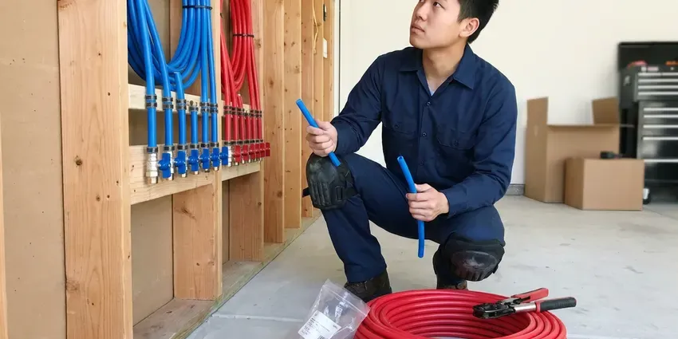

Water Damage Restoration in New Rochelle, NY
HCL Plumbing handles water damage in New Rochelle, NY from the plumbing repair through drying and rebuild.
- Leak Fixed First
- Fast Emergency Water Response
- Rapid Emergency Response
- Commercial Drying Equipment

Leak Fixed and Home Dried in New Rochelle, NY.
Shut off the main if you can, then call HCL Plumbing and we will take it from there.
Full Water Damage Restoration in New Rochelle, NY
HCL Plumbing restores water damage for homeowners across New Rochelle, NY, from a dishwasher leak under the cabinets to a burst line in the attic. We extract the standing water, open up what cannot be dried in place, and run dehumidifiers until every reading is back to normal. Drying usually takes three to five days.
Our expertise includes:
- Flood cuts and wall cavity drying
- Drywall, baseboard and cabinet removal and replacement after drying
- Moisture mapping with pin and pinless meters

Additional Plumbing Maintenance Services in New Rochelle, NY
Our maintenance and specialty plumbing services in New Rochelle, NY protect your home year-round and extend the life of every system.


Customers
Why Choose HCL Plumbing for Water Damage Restoration in New Rochelle, NY?
Using HCL Plumbing for water damage means one crew for the leak, the drying and the rebuild in New York. No waiting between trades. Our plumber knows how long the leak ran and passes that to the restoration tech, which helps find every wet spot.
- Same-Day Start, Extraction begins on the first visit, while the damage is still shallow.
- Trained Technicians, Our restoration techs follow IICRC drying standards and the industry guidelines for contaminated water.
- Source Repaired, Our plumbers fix the leak on the first visit so drying can begin.
Citywide Coverage
Every neighborhood in New Rochelle is in our service area, from older homes with plaster walls to newer slab homes. Each construction type dries differently. Our crews carry enough fans and dehumidifiers on the truck to start drying a typical two-room leak the moment the water is out.
Experienced Team
Training at HCL Plumbing covers drying science, water categories and mold prevention for New Rochelle, NY homes. Our techs learn to read humidity, size dehumidifiers to the room and judge when a wall can stay. It is real science.
Safety-First Approach
Antimicrobials we use are EPA-registered and applied only where needed. We ventilate during treatment and keep pets and family out of the area until it is dry, which keeps the products where they belong. Labels get followed.
Trusted Certified New Rochelle Plumbing Services Professionals
At HCL Plumbing, we are proud to offer certified plumbing services throughout New Rochelle, NY. Those papers on the wall mean something. Our plumbers hold recognized industry credentials, and they follow strict safety and quality rules on every repair, installation and maintenance call we run.
Call Us Now PHCC Plumbing Contractor Recognition
PHCC Plumbing Contractor Recognition Better Business Bureau (BBB) Accreditation
Better Business Bureau (BBB) Accreditation Angi Certified Pro
Angi Certified Pro ISO 9001 Quality Management Certification
ISO 9001 Quality Management CertificationWater Damage Cleanup and Drying in New Rochelle, NY
Water Heater Leak Cleanup in New Rochelle
A failed tank can dump 40 to 75 gallons in minutes. Private wells serve a large share of rural homes, and they can carry iron, sulfur or hardness that stains fixtures and clogs filters. From a garage or closet, the water usually runs under the walls into nearby rooms and wets the drywall bottoms and tack strip. We replace the heater. We add a drain pan where it fits.

Foundation Water Damage Mitigation in New Rochelle, NY
Water pooling against a slab or soaking a crawl space can move soil and stress the structure. Frost reaches deep into the ground here, so water service lines must be buried well below the surface to avoid freeze damage. After drying what we can reach, we look at the cause, a plumbing leak, a downspout at the foundation or grading that runs toward the house. Fixing the cause comes first.
Toilet Overflow and Sewage Water Cleanup in New Rochelle, NY
Toilet overflows range from clean bowl water to raw sewage. If the water came from the tank or a clean bowl, it is usually Category 1 or 2, but a backup from the drain line is Category 3 and gets handled like any sewage job. The category decides what stays. Porous materials touched by sewage come out.
Burst Pipe Water Damage Repair in New Rochelle, NY
A burst 1/2 inch supply line can put out several gallons a minute. HCL Plumbing shuts off the main, repairs the broken section and starts extraction the same visit in New Rochelle, NY. Fast action saves material. After extraction, unsalvageable drywall is cut above the wick line, and fans and dehumidifiers go to work on the cavities and floors.
Insurance Claim Assistance in New Rochelle, NY
Adjusters want proof of what was wet, how wet and for how long. We photograph the damage before we touch it, log moisture readings by location every day, and write an itemized scope that matches how insurers price restoration work. You keep copies. We do not file the claim for you, but we can talk with your adjuster in New Rochelle, NY about what we found.
Emergency Water Extraction in New Rochelle
Standing water comes out first, before any drying starts. Carpet gets a truck-mounted or portable extractor, and deeper water on hard floors gets a submersible pump. Extraction is fast. Every gallon we pull out in New Rochelle is a gallon the dehumidifiers do not have to pull from the air later.
Sewer Backup Cleanup in New Rochelle
Sewer water is Category 3, the worst kind, and it changes the whole job. Carpet, pad and any drywall it touched usually come out, since porous materials soaked in sewage cannot be reliably cleaned and disinfected. Hard surfaces get disinfected. Our crews wear protective gear and clear the blockage in New Rochelle so the backup does not repeat during cleanup.

Slab Leak Water Damage Restoration in New Rochelle, NY
New York has some of the oldest housing in the country, and many homes still have galvanized steel supply pipes and cast iron drains. Under a slab, a pressurized leak can wet flooring and baseboards from below for weeks unnoticed. Warm floor spots are a clue. We locate and repair the leak, often by rerouting the line overhead. Slab drying and flooring removal come next.
Water Damage Cleanup Near Me in New Rochelle, NY
Being local, we know the foundations, wall types and plumbing common in New Rochelle homes. Knowing how water moves in local homes helps us find it and dry it fully. We return quickly for readings.
With water spreading across your floor, you need a crew that is close by. Our teams are stationed throughout the area with extraction and drying equipment loaded and ready to roll out the door. Faster arrival limits damage.
HCL Plumbing at a Glance
- Fully licensed plumbing team covering New Rochelle, NY
- 24/7 emergency service with same-day scheduling
- Upfront, flat-rate pricing before work begins
- 4.8-star rated by 520+ New York customers
New Rochelle Map
New Rochelle Information
- Population
- 83,742
- Area codes
- 914/347/845
- Service area
- New Rochelle and communities within 40 miles
- Nearby
- Mount Vernon, Yonkers, White Plains, Hempstead
Water wicks up drywall about an inch an hour after a leak, so in New Rochelle, NY the first day of drying sets how much of the wall can be saved.
Talk to a Plumber
Reach out to HCL Plumbing for honest, reliable plumbing from people who know the trade in New Rochelle, NY.
Our Specialized Plumbing Services in New Rochelle, NY
At HCL Plumbing, you get every kind of plumbing service from one company across New Rochelle, NY. We go from leak detection all the way to full system installations, for homes and commercial buildings, and we do it quickly at a fair price. Take a look at our core services below:


Our Water Damage Process in New Rochelle, NY
Most water damage jobs follow the same basic steps, though the timing depends on the materials.
Call Us
Call HCL Plumbing at (716) 396-7101 as soon as you find water. We tell you how to stop the water and send a crew.
Stop the Leak
Our crew arrives, finds the source and fixes the leak before drying starts.
Extract
Pumps and extractors pull standing water out of carpet, pad and tile and wood.
Frequently Asked Questions About Water Damage Restoration in New Rochelle
Small single-room restorations with extraction and drying often cost $1,200 to $4,000. Bigger jobs with drywall, cabinets and flooring can reach $5,000 to $15,000 or more if water spread through several rooms. Policies often cover it.
Stains on ceilings, bubbling paint and soft spots in the floor are common in New Rochelle homes with hidden leaks. A higher bill, a meter moving with everything off, or a musty room all point to a leak. Have a plumber look.
Drying usually takes 3 to 7 days. Repairs after drying, such as drywall, flooring and paint, may add a week or more based on materials. Hardwood and slab are slow.
Household fans help with small surface spills. They move air over the surface but do not remove moisture from the room like a dehumidifier. Trapped water causes mold.
Sometimes, but not always. Clean water drywall may dry in place with quick action, while long-soaked or contaminated drywall usually goes. The meters decide.
Many policies cover sudden damage, such as a burst pipe or failed water heater. Slow leaks, neglect and outside flooding are often excluded, so check the exclusions first. Call your insurer soon.
Surface spills, sure. Beyond that, drying a wall cavity or subfloor takes commercial dehumidifiers and moisture meters, and contaminated water from a toilet or sewer needs protective gear and proper disposal. Skipping it invites mold.
Mold prevention comes down to speed and dryness. Fast extraction, same-day drying and antimicrobial on wet framing beat the 24 to 48 hour window. Readings confirm it.
Hear From Customers Who Hired Our Plumbing Experts

Kevin O.
Before buying our house I paid for a sewer camera inspection. HCL Plumbing found a belly in the line that held standing water about forty feet from the cleanout. We used the video to get the sellers to fix it before closing.
Sewer Camera Inspection · Levittown, NY
Daniel K.
A pipe burst in the garage ceiling at 11 at night. Someone answered on the second ring, and the plumber was in my driveway about fifty minutes later. He shut off the main, cut out the split section, and had water back on before 2 am.
Emergency Plumbing · New York, NY
Karen W.
After our third pinhole leak in copper, we stopped patching. HCL Plumbing gave us a written plan room by room and repiped the house in PEX while we stayed in it. The crew covered our floors every morning and cleaned up every night.
Repiping · New Rochelle, NY
Rachel N.
Hard water was leaving white crust on every faucet and our dishwasher was struggling. The tech tested the water, recommended a softener sized for a family of five, and installed it with a bypass valve in one afternoon. The spots on our glasses are gone.
Water Softener · Levittown, NY
Brian W.
I smelled gas behind the dryer and called right away. The plumber found a corroded flex connector, replaced it, and pressure tested the whole line before turning the gas back on. He let me watch the gauge hold steady for fifteen minutes.
Gas Line Repair · New Rochelle, NYDiane F.
My kitchen faucet had dripped for months and I finally got tired of hearing it at night. HCL Plumbing came out the next morning, replaced the cartridge and the O rings, and tightened a loose base that was letting water under the sink.
Faucet Repair · White Plains, NY